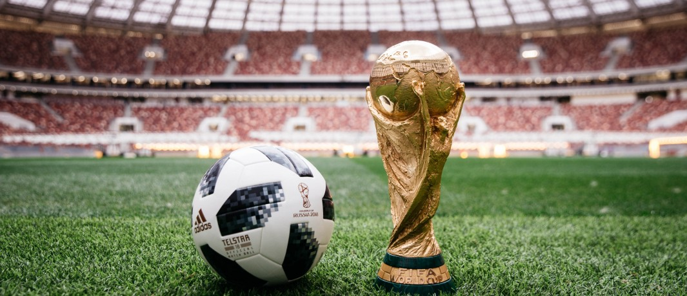

Soccer Worldwide
The FIFA World Cup
The most well-known worldwide soccer event has to be the FIFA World cup. Every four years, participating countries send a team of their best male players to compete in a tournament against other countries in order to win the title of world champion. The tournament is played in stages leading up to the final where the top two teams face off to win it all. To learn more, visit the FIFA World Cup website.
The Olympics
The Olympics are the only other time in which the whole world competes in a tournament of soccer. Teams compete in the same way that they would in the World Cup, but the top 3 teams are the ones who go home with a prize. This of course, would be a bronze, silver, or gold medal. The Olympics are also the only time that the world's men and women play soccer against each other (in their gendered teams/events) at the same time.